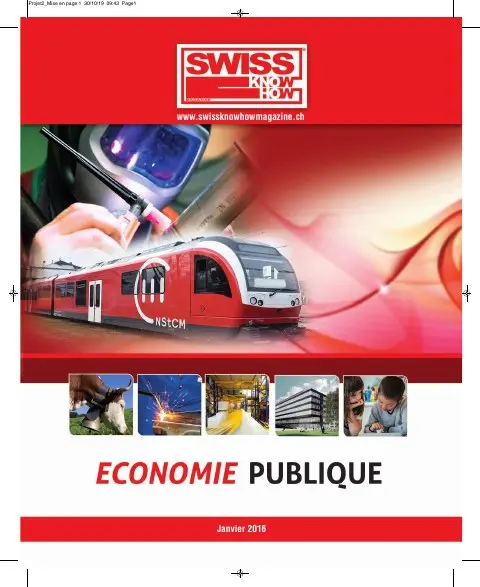

En bref
Institution autonome de droit public fondée à Montreux en 1948, la Caisse cantonale vaudoise de compensation applique plus de 18 lois fédérales et cantonales avec 246 collaborateurs. En 2014, elle a versé 2,72 milliards de francs de prestations à quelque 100 600 affiliés AVS et près de 90 000 bénéficiaires de rentes. Sa directrice détaille ses tâches : perception des cotisations AVS/AI/APG et chômage, versement des rentes, allocations familiales et pour perte de gain, prestations complémentaires, PC Familles et rente-pont, gestion de la caisse agricole Agrivit et du Fonds cantonal pour la famille. Elle présente la plateforme e-business pour les employeurs, commente la politique cantonale « Vieillissement et Santé » et évoque les projets fédéraux comme l’IDE et la réforme Prévoyance vieillesse 2020.
« Sa mission est de garantir à ses affiliés des prestations en appliquant la législation en vigueur. »— Fabienne Goetzinger
L'interview intégrale
Interview de Fabienne Goetzinger, Directrice de la Caisse cantonale vaudoise de compensation AVS/AI
Institution autonome de droit public fondée à Montreux le 1er janvier 1948, elle se caractérise par la diversité des tâches que lui délèguent la Confédération suisse et le Canton de Vaud, tout en étant administrativement séparée de l’Etat. Sa mission est de garantir à ses affiliés des prestations en appliquant la législation en vigueur tout en veillant au maintien de sa pérennité.
Quels sont les chiffres-clés de l’AVS‐CCVD ?
1948 – Entrée en vigueur de la loi sur l’AVS
Pilier essentiel du système suisse de retraites, la loi sur l’assurance-vieillesse et survivants (AVS) concrétise la notion de solidarité, tant sur le plan économique entre riches et pauvres que sur celui entre actifs et non-actifs. Basé sur le principe du système de répartition, le financement est garanti par les cotisations paritaires, les cotisations des indépendants et des non-actifs ainsi que par les contributions des pouvoirs publics. En 2013, l’AVS fêtait ses 65 ans.
2020 – Date de la prochaine réforme AVS
Avec 10 révisions de loi depuis sa création, l’AVS se prépare pour une profonde réforme en 2020.
18 – Lois fédérales et cantonales
En complément à la loi sur l’AVS, notre institution est responsable de l’application de plus de 18 lois tant fédérales que cantonales pour les différentes tâches qui lui sont confiées.
246 – Collaborateurs
Pleinement impliqués dans notre organisation qui offre un service de qualité à la fois proche et à l’écoute de nos affiliés.
En chiffres globaux, la Caisse cantonale vaudoise et ses institutions, c’est :
2014 : 2.72 milliards de prestations cantonales et fédérales versées ; 100'600 affiliés AVS ; 40'200 affiliés AF ; 89'968 bénéficiaires de rentes AVS/AI ; 28'642 bénéficiaires de PC ; 31'509 bénéficiaires AF.
Pourriez-vous nous rappeler les tâches fédérales et cantonales dévolues à la Caisse cantonale vaudoise de compensation (CCVD) en matière d’assurance-vieillesse et d’allocations familiales ?
Notre Caisse de compensation collabore avec différents partenaires, notamment la Confédération, le Canton de Vaud, les Centres sociaux régionaux (CSR), les Agences d’assurances sociales, l’ensemble des Caisses de compensation cantonales ou professionnelles ainsi qu’avec les Offices AI.
En matière d’assurance-vieillesse et d’allocations familiales, nous avons regroupé nos principales tâches dans les tableaux ci-dessous :
Assurance-vieillesse
Tâches fédérales – Cotisations :
• Perception des cotisations AVS/AI
• Perception des cotisations APG
• Perception des cotisations de l’assurance-chômage
Tâches fédérales – Prestations :
• Versement des prestations AVS et des prestations AI en espèces
• Versement des allocations pour perte de gain en faveur des personnes servant dans l’armée ou dans la protection civile ainsi que les allocations maternité fédérales
Tâches cantonales – Caisse professionnelle AVS agricole et viticole Agrivit :
• Perception des cotisations professionnelles des exploitants et/ou propriétaires de domaines agricoles et viticoles
Tâches cantonales – Prestations :
• Versement des allocations familiales
• Versement des prestations complémentaires AVS/AI
• Versement des prestations complémentaires pour familles et de la rente-pont
La Caisse cantonale vaudoise de compensation AVS gère, avec l’approbation de la Confédération, la Caisse professionnelle de compensation AVS agricole et viticole Agrivit (dont l’association fondatrice est Prométerre qui fête ses 20 ans en 2015). Elle gère également la Caisse cantonale vaudoise d’allocations familiales.
Allocations familiales
Tâches fédérales :
• Perception des cotisations des allocations familiales dans l’agriculture (LFA)
• Versement des allocations familiales aux travailleurs et aux exploitants agricoles
Tâches cantonales :
• Gestion des allocations familiales versées aux salariés, aux indépendants et aux non-actifs
• Gestion de l’allocation de naissance pour les travailleurs agricoles
• Prélèvement, auprès de ses affiliés, des contributions cantonales, encaissées par l’intermédiaire des Caisses d’allocations familiales et versées au Fonds de surcompensation ; ces contributions concernent la Fondation pour l’accueil de jour des enfants et la Fondation en faveur de la formation professionnelle.
• Application du régime des allocations cantonales de maternité ou d’adoption
• Administration du Fonds cantonal pour la famille
• Vérification, sur délégation du Canton, de l’application de la LvAFam par les caisses et collecte des données nécessaires à la statistique
Quid des entreprises (cotisations et allocations) ?
Pour les entreprises, notre Caisse est active dans les deux domaines suivants :
Les Cotisations
• L'affiliation et la fixation des cotisations des employeurs, des indépendants et des personnes sans activité lucrative
• La perception des cotisations professionnelles aux exploitants et/ou propriétaires agricoles et viticoles
Les Prestations
• Etablissement des certificats d’assurance AVS
• Allocations familiales pour les salariés, les indépendants, les exploitants et les travailleurs agricoles
• Allocations pour perte de gain (APG)
• Allocations maternité fédérales
• Versement des allocations professionnelles agricoles
Quels partenariats avez-vous développés ?
Dans le cadre des tâches cantonales et fédérales qui nous sont déléguées, nous collaborons avec le Service de l’action sociale et de l’hébergement (SASH) ainsi qu’avec les Agences d’assurances sociales.
Par ailleurs, nous avons également développé des partenariats avec les institutions suivantes :
Les Offices d’assurance-invalidité : http://www.aivd.ch/
L’Association régionale de la Riviera pour la préparation à la retraite (ARPR) : http://www.arpr.ch/
Forccla Groupe de formation de la conférence latine des caisses cantonales de compensation, de la Caisse fédérale et de la Centrale de compensation qui dispense des formations initiale et continue aux collaborateurs de tous les départements et de tout niveau. Ceci représente une vingtaine de cours de 2 à 3 jours sur l’ensemble de l’année.
Swissdec Projet commun à but non lucratif regroupant plusieurs partenaires indépendants ; cette certification assure un label de qualité pour les systèmes de comptabilité salariale. Swissdec est une solution moderne, rapide, simple et sûre pour établir votre déclaration de salaires et transmettre vos données aux destinataires désirés (AVS, LAA, LPP, fisc, etc.).
Pourriez-vous nous présenter vos principales prestations pour les particuliers ?
Nos principales prestations pour les particuliers se subdivisent en plusieurs domaines :
Les Prestations AVS
• Calcul prévisionnel de la rente
• Calcul et versement des rentes AVS et des rentes de survivants AVS
• Allocations pour impotent et moyens auxiliaires AVS
• Prestations AI en espèces
Les Allocations familiales
• Allocations familiales cantonales pour les salariés, les indépendants et les non-actifs
• Allocations familiales fédérales dans l’agriculture
• Aide du Fonds cantonal pour la famille
Les Allocations pour perte de gain et maternité
• Allocations de maternité fédérales et cantonales
• Allocations perte de gain en faveur des personnes servant dans l’armée ou dans la protection civile
Les Prestations complémentaires
• Prestations complémentaires AVS/AI
• PC Familles et rente-pont
• Remboursement des frais de maladie
• Remboursement des frais de garde
Le Certificat d’assurance et le Compte individuel (CI)
• Etablissement du certificat d’assurance
• Remise d’un extrait de compte individuel (CI)
• Calcul du splitting
• Calcul de la bonification pour tâches d’assistance
Pourriez-vous nous présenter votre plate-forme e-business pour vos services en ligne ?
La plate-forme e-business est un service en ligne réservé à nos affiliés, plus précisément aux employeurs pour leur permettre d’annoncer leur personnel.
Cette plate-forme est dédiée :
• Au dépôt des fichiers-salaires (format PUCS)
• A la possibilité de compléter sa déclaration en ligne (système DAN)
• A l’annonce des collaborateurs en ligne (ACL)
• A la consultation en ligne de l’avancement du traitement des fichiers-salaires par nos services.
Ce service remplace l’emploi du formulaire papier, est à la fois plus simple, plus rapide et, en outre, totalement gratuit. Une fois les données dans notre système, le traitement et l’envoi des attestations d’assurance sont effectués dans un délai de 3 à 5 jours.
e-business permet également d’adapter et de modifier les forfaits servant de base à la calculation des acomptes de cotisations employeurs (PAC).
Dans un proche avenir, de nouveaux services permettront de demander des extraits de compte en ligne et de les imprimer. L’ensemble des fonctionnalités d’e-business sera ainsi accessible à tous nos affiliés (employeurs, indépendants et non-actifs).
Pour nos affiliés n’ayant pas encore opté pour ce service, nous les invitons à se rendre sur notre site qui leur indiquera la marche à suivre pour la création d’un compte http://www.caisseavsvaud.ch/e-business.
Quel regard portez-vous sur la politique “Vieillissement et Santé” du Canton de Vaud ? Répond-elle suffisamment aux besoins des personnes de 65 ans et plus ?
Dans le contexte des données démographiques liées au vieillissement de la population, plusieurs recommandations ont été émises par le Conseil fédéral. La politique « Vieillissement et santé » du Canton de Vaud s’inscrit dans un champ d’action de l’une d’entre elles. Elle est essentiellement basée sur les enjeux sanitaires, c’est-à-dire santé et soins médicaux et se focalise sur l’impact des coûts de la santé et des dépenses sociales.
Quant aux besoins, en matière de soins et d’accompagnement, des personnes de 65 ans et plus, ils peuvent sensiblement varier en fonction des populations visées et de leur mode de vie. Chacun a sa propre vision de ce que sera sa vie lorsque l’âge de la retraite sera venu tout en espérant, bien légitimement y arriver en bonne santé et de conserver celle-ci le plus longtemps possible. Toutefois, selon les statistiques, il apparaît que 40 à 50 % des personnes de 65 ans présentent des problèmes de santé. C’est donc à cette catégorie d’assurés que les actions de promotion de la santé s’adressent plus particulièrement, dès lors qu’elles nécessitent des soins et des besoins complexes.
Quelles sont selon vous les principaux défis à relever dans le domaine de l’assurance-vieillesse et des prestations familiales, à l’échelle cantonale et nationale ?
Dans le cadre de la gestion de notre institution, la Caisse cantonale vaudoise de compensation AVS est impliquée dans de nombreux projets au niveau de la Confédération, laquelle sollicite les branches métiers de notre institution, on peut notamment citer :
• IDE/RRE Registre de référence garantissant l’identification unique et univoque des entreprises. L’IDE fait partie de la stratégie suisse de cyberadministration et est, en tant que prestation d’infrastructure de base, un prérequis pour de nombreux autres projets de cyberadministration par un N° d’identification des entreprises.
• La révision de la Loi sur le travail au noir (LTN) et les coûts de la réglementation des entreprises.
De surcroît, à moyen terme, nous serons concernés au premier chef par la mise en œuvre de la réforme de la Prévoyance vieillesse 2020. Cette réforme prévoit de maintenir le niveau des prestations de la prévoyance vieillesse, elle vise à assurer un financement suffisant des 1er et 2e piliers et à rendre plus flexible le passage à la retraite.
Texte paru dans Swiss Knowhow – Économie publique (Vaud) 2016, p. 8-10.
Personnes citées
- Fabienne GoetzingerDirectrice

Paru dans
Swiss Knowhow – Économie publique (Vaud) 2016
2016 · page 07-10 · article original en français
Lire l'article complet PDF